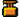

Il Caposquadra
Guidare la Squadra
Come spiegato nella sezione Orientamento sul Campo, il Capo Squadra può posizionare dei marker sulla mappa per i membri della sua squadra per guidarli. Troveranno un marker sulla loro bussola da seguire, così come un'icona sulla mappa. Il Capo Squadra dovrebbe usarli il più spesso possibile e può anche utilizzarli per calcolare facilmente la distanza verso un obiettivo. Può farlo dalla mini-mappa facendo clic destro su di essa e posizionando il marker o premendo il tasto radio secondario (T) e puntando all'obiettivo e utilizzando uno dei pulsanti per posizionare il marker.
 Bersaglio
Bersaglio - Costruzione
 Ricognizione
Ricognizione Difesa
Difesa -  Demolizione
 Movimento
Movimento
Anche il comandante può dare ordini. Se accetti l'ordine (PAG SU), il tuo marker verrà sostituito con l'ordine del comandante.
Avvistare il Nemico
Il Capo Squadra in PR:BF2 ha molte abilità funzionali. È in grado di marcare unità nemiche sulla mappa e inviare rapporti di contatto al comandante della fazione con la possibilità di marcare un bersaglio sulla mappa della fazione. Per eseguire queste funzioni, segui questi passaggi:
- Marca una posizione tramite la minimappa o tramite il menu radiale della radio secondaria (T).
- Seleziona l'oggetto radio/cellulare assegnato ai kit dell'Ufficiale/Ricognitore/Capo della Cellula o del Collaboratore e usa il tasto di fuoco alternativo (Click Destro) per attivarlo.
- Mentre guardi attentamente nella direzione del marker del Capo Squadra, premi e tieni premuto il tasto principale del menu a comparsa (Q), passa sopra la tipologia corretta di forze ostili, veicoli o categoria di equipaggiamento e premi il tasto sinistro o destro per posizionare il corrispondente marker sulla mappa.
Nota che i passaggi 1 e 2 possono essere eseguiti in qualsiasi ordine.
{% figure "../assets/spotting.png" %}
Menu radiale di ricognizione. {% endfigure %}
{{ "Video Tutorial - Posizionare i Marker" | youtube("XNDb2yMuoho") }}
Il Designatore GTL (GTLD)
Il kit del Capo Squadra e il kit del Ricognitore utilizzati dalle forze convenzionali sono equipaggiati con il GTLD (Designatore Laser per Bersagli Terrestri). Questo dispositivo ha uno zoom migliore rispetto ai binocoli regolari, include un telemetro e ti permette di designare bersagli nemici che possono essere colpiti da bombe o missili da unità aeree alleate (e nemiche).
Con il GTLD equipaggiato, puoi fare clic destro per aumentare il livello di zoom e clic sinistro per attivarlo/disattivarlo. Quando è attivo, il GTLD emetterà un segnale laser che devi mantenere sul tuo bersaglio fino a quando la bomba/missile lo colpisce, a differenza delle versioni precedenti in cui il raggio laser rimaneva sul bersaglio anche senza vederlo.
Inoltre, mentre il raggio laser è ATTIVO, puoi accedere al menu della radio principale (Q) per richiedere supporto aereo ravvicinato (CAS) o richiedere missioni di fuoco di mortaio. Farlo trasmetterà automaticamente un messaggio di testo alla tua fazione con i dettagli della richiesta e aggiungerà un marker di bersaglio sulla mappa.
Punti di Raduno
Un Capo Squadra ha la possibilità di posizionare i Punti di Raduno o Rally Point (RP). Ciò consente ai membri della squadra caduti in battaglia di riunirsi in un'area sicura con il resto della loro squadra. Per piazzare un RP, è necessario premere il tasto della radio secondaria (T) e selezionare PIAZZA PUNTO DI RADUNO.
Le seguenti condizioni devono essere soddisfatte affinché l'RP venga piazzato con successo:
- Sei il capo della tua squadra e sei equipaggiato con il kit dell'ufficiale.
- Devi avere 2 membri della squadra vicino a te.
- Il nemico deve essere distante più di 50 metri nelle mappe di 1x1 km o 125 metri nelle mappe di 2x2 km e 4x4 km.
Il punto di raduno scompare automaticamente dopo 60 secondi, a meno che:
- Si trovi entro 2 quadranti grandi della griglia della mappa da un FOB amico.
- Si trovi entro 2 quadranti grandi della griglia della mappa da un APC o IFV alleato. Solo quelli da cui puoi richiedere kit.
Un nemico che si avvicina entro 50 metri nelle mappe di 1x1 km o 125 metri nelle mappe di 2x2 km e 4x4 km dal punto di raduno lo disabiliterà. Sulle mappe più grandi la distanza è di 600 metri.
Un punto di raduno si ricarica ogni 1 minuto, a meno che non sia stato conquistato dal nemico. In tal caso, è necessario attendere 5 minuti.
Richiedere Supporto
Il capo squadra può anche utilizzare la sua radio per richiedere supporto da altre squadre. Per farlo, deve attivare la sua radio e quindi premere il tasto della radio secondaria (T). Questo aprirà il menu per richiedere supporto e per posizionare risorse della fazione. Le cinque opzioni inferiori che iniziano con "NEED... (NECESSITO)" posizioneranno un marker sulla mappa nella tua posizione. Trasmettono anche un messaggio radio alla tua squadra per avvisarli della tua richiesta. La richiesta "NEED AREA ATTACK (NECESSITO DI ATTACCO AD AREA)" si comporta in modo leggermente diverso rispetto alle altre. In alcune mappe, le forze convenzionali possono utilizzare questo comando per richiedere un bombardamento d'artiglieria. Se la tua richiesta viene approvata dal comandante della squadra, l'attacco colpirà dopo circa un minuto. Dopo aver caricato una nuova mappa o aver eseguito un attacco in area, ci vogliono 30 minuti prima che sia nuovamente disponibile. Allo stesso modo, le fazioni non convenzionali hanno accesso a un bombardamento di mortai ogni 20 minuti sulla maggior parte delle mappe.
{% figure "../assets/support.png" %} Richiesta di supporto via radio. {% endfigure %}
Costruzioni
La costruzione di postazioni è una funzionalità essenziale del Capo Squadra, che anche il Comandante della fazione possiede. Quando si dispiega e si costruisce un Avamposto Avanzato (FOB), il Capo Squadra deve avere un kit da ufficiale e una cassa di rifornimenti pesante entro un raggio di 50 metri dalla sua posizione. 2 casse di rifornimenti leggere offrono le stesse capacità di 1 cassa di rifornimenti pesante per raggiungere lo stesso scopo. Insorti, Talebani e Hamas possono solo dispiegare nascondigli, mortai e postazioni anticarro per la loro squadra, che non richiedono rifornimenti per costruire queste strutture. Per eseguire questa funzione, è necessario un kit da capo della cellula o collaboratore.
{% figure "../assets/buildcomo.png" %} Costruzione delle postazioni tramite la radio. {% endfigure %}
Per dispiegare una struttura, segui questi passaggi:
- Seleziona ed attiva la radio / cellulare.
- Guarda nella direzione in cui la struttura dovrebbe essere posizionata. Sarà posizionata a 10 metri di fronte a te.
- Una volta che l'hai dispiegata, premi il tasto del menu radio secondaria (T).
- Fai click sinistro del mouse su DEPLOY / REMOVE ASSET (POSIZIONA / RIMUOVI STRUTTURA).
- Seleziona la struttura che desideri costruire dalla lista.
{% figure "../assets/shovel.png" %} La pala necessaria per costruire le strutture. {% endfigure %}
Players currently standing where the deployable is being placed will die. So make sure your squad knows where you intend to build. Soldiers need to use the entrenching tool to build assets. Construction is complete once the digging stops.
Place the deployables on open terrain non obstructed area to avoid undesirable effects and unwanted placement locations. The deployable will only appear if its placement location isn't too far above or below your position.
To dismantle a built structure, squad members must use the entrenching tools right click to destroy an emplacement, then the Squad Leader is able to right-click DEPLOY / REMOVE ASSET menu whilst pointing towards the object no more than 5m away, to completely remove it.
Deployable Emplacements weapons can be rearmed by dropping ammunition bags next to them. Several bags are needed to completely rearm an emplacement.
I giocatori che si trovano attualmente dove viene posizionata la struttura moriranno. Assicurati quindi che la tua squadra sappia dove intendi costruire. I soldati devono utilizzare l'attrezzatura da costruzione per costruire le strutture. La costruzione è completata una volta che si interrompe lo scavo.
Posiziona le strutture in una zona aperta senza ostacoli per evitare effetti indesiderati e posizioni indesiderate. La struttura apparirà solo se la posizione di dispiegamento non è troppo alta o troppo bassa rispetto alla tua posizione.
Per smantellare una struttura costruita, i membri della squadra devono utilizzare la pala facendo clic destro per distruggere una struttura, quindi il Capo Squadra è in grado di fare clic destro su DEPLOY / REMOVE ASSET mentre punta verso l'oggetto non oltre i 5 metri di distanza, per rimuoverlo completamente.
Le armi dele Postazioni Fisse possono essere rifornite lasciando sacche di munizioni accanto ad esse. Sono necessarie diverse sacche per ricaricare completamente una postazione.
{% figure "../assets/deploy.png" %} Esempi di smantellamento e cotruzione di una trincea. {% endfigure %}
Strutture Posizionabili
Ecco una lista delle strutture posizionabili e i requisiti per costruirle. Le risorse posizionabili possono essere smantellate con una pala o, in alternativa, distrutte con C4, IED, proiettili di carri armati, proiettili di APC o qualsiasi altra forma di munizioni pesanti. Le postazioni possono anche essere completamente distrutte continuando a danneggiare le fondamenta della struttura. Gli avamposti e i nascondigli possono essere distrutti anche da esplosivi generici o esplosivi al plastico C4 e TNT. I capi squadra possono rimuovere le strutture posizionabili non completate tramite la radio in modo simile a come sono state piazzate, utilizzando il clic destro in alternativa per rimuovere le fondamenta della struttura. La modalità di fuoco alternativa della pala ha anche la capacità di smantellare le strutture posizionabili non completate. Un'importante nota sui requisiti e le limitazioni elencate di seguito è che tutti i valori riguardanti la distanza da una FOB e la quantità massima di risorse per FOB sono raddoppiati nella modalità di gioco CNC (ad eccezione della quantità di mortai). Ricorda anche che 2 casse di rifornimenti grandi possono essere sostituite anche da 4 casse di rifornimenti piccole o 1 cassa grande e 2 casse piccole. Per saperne di più sulla logistica e le casse, consulta il capitolo sulla logistica..
Base Operativa Avanzata (FOB): La base operativa avanzata, nota anche come avamposto, funge da posizione di spawn difensiva per la fazione. Si attiva 90 secondi dopo essere stata costruita. Diventa inutilizzabile per 30 secondi se ci sono 2 nemici entro 50 metri, 4 nemici entro 100 metri o 8 nemici entro 150 metri. Requisiti e limitazioni:
- Deve essere costruita entro 50 metri da una cassa di rifornimenti grande alleata.
- La fazione può avere un massimo di 6 avamposti contemporaneamente.
- Deve essere costruita almeno a 200 metri da altri avamposti e dal Quartier Generale della fazione.
- Deve essere costruita almeno a 10 metri dai confini della mappa (200 metri sulla modalità CNC).
{% figure "../assets/fobb.png" %} {% endfigure %}
Nascondiglio: Gli Insorti utilizzano i nascondigli come punto di spawn. Se ci sono 2 o più nemici nelle vicinanze (entro 50 metri), il respawn è disabilitato fino a 90 secondi dopo che se ne siano andati via o muoiano. Requisiti e limitazioni:
- Deve essere richiesto a una distanza superiore a 200 metri dal nascondiglio più vicino e dal quartier generale degli Insorti.
- La fazione può avere fino a 6 nascondigli contemporaneamente.
- Deve essere costruito almeno a 10 metri dai confini della mappa.
{% figure "../assets/hideoutt.png" %} {% endfigure %}
Mitragliatrice Pesante: Una mitragliatrice pesante fissa. Requisiti e limitazioni:
- Deve essere posizionata entro 200 metri da una FOB / nascondiglio e almeno 200 metri di distanza dalla Postazione del Comando della fazione e a 50 metri dal Deposito dei Veicoli.
- Devono essere presenti 2 casse di rifornimenti grandi entro 200 metri.
- Sono ammesse solo 2 mitragliatrici per FOB e devono essere all'interno di un raggio di 200 metri.
- La fazione può avere fino a 24 mitragliatrici pesanti.
{% figure "../assets/hmg.png" %} {% endfigure %}
Anti-Carro: Un lanciamissili anticarro fisso. Quest'arma è dotata di visione termica e di 1 livello fisso di ingrandimento. La ricarica richiede 20 secondi. Requisiti e limitazioni:
- Deve essere posizionato entro 200 metri da una FOB / nascondiglio e almeno 200 metri di distanza dalla Postazione del Comando della fazione e a 50 metri dal Deposito dei Veicoli.
- Devono essere presenti 2 casse di rifornimenti grandi entro 200 metri.
- Nessun altra postazione anticarro può essere presente entro 200 metri di distanza e su quella FOB.
- La fazione può avere fino a un massimo di 3 posizioni anticarro contemporaneamente.
{% figure "../assets/tow.png" %} {% endfigure %}
Anti-Carro (forze non convenzionali): Il lanciamissili anticarro SPG9 ha un angolo di tiro limitato. Può sparare due tipi di munizioni e impiega 15 secondi per essere ricaricato. Requisiti e limitazioni:
- Deve essere posizionato entro 200 metri da uan FOB / nascondiglio e almeno 200 metri di distanza dalla postazione del comando della fazione e a 50 metri dal Deposito dei Veicoli.
- Devono essere presenti 2 casse di rifornimenti grandi entro 200 metri (solo per la milizia e i Ribelli Siriani).
- Nessun altra postazione anticarro può essere presente entro 200 metri di distanza e su quella FOB.
- La fazione può avere fino a un massimo di 3 posizioni anticarro contemporaneamente.
{% figure "../assets/spg.png" %} {% endfigure %}
Anti-Aerea: Una postazione lanciamissili terra-aria fissa. Requisiti e limitazioni:
- Deve essere posizionato entro 200 metri da una FOB / nascondiglio e almeno 200 metri di distanza dalla postazione del comando della fazione e a 50 metri dal Deposito dei Veicoli.
- Devono essere presenti 2 casse di rifornimenti grandi entro 200 metri.
- Nessun altra postazione terra-aria può essere presente entro 200 metri di distanza e su quella FOB.
- La fazione può avere fino a un massimo di 6 emplacements terra-aria.
- Le forze non convenzionali ottengono una mitragliatrice DShK su treppiede come postazione terra-aria.
{% figure "../assets/aaa.png" %} {% endfigure %}
Trincea: Una trincea fortificata con sacchi di sabbia fornisce copertura contro le armi leggere e gli attacchi d'artiglieria. Requisiti e limitazioni:
- Deve essere posizionato entro 200 metri da una FOB / nascondiglio e almeno 200 metri di distanza dalla Postazione del Comando della fazione e a 50 metri dal Deposito dei Veicoli.
- Devono essere presenti 2 casse di rifornimenti grandi entro 200 metri.
- Un massimo di 9 altre trincee, sacchi di sabbia o linee di filo spinato possono essere posizionati entro 200 metri e su quella FOB.
- La fazione può avere fino a 60 trincee, muri di sacchi di sabbia o linee di filo spinato in totale.
{% figure "../assets/foxhole.png" %} {% endfigure %}
Muro di sacchi di sabbia: Un muro di sacchi di sabbia è un piccolo muro lungo 5 metri fatto di sacchi di sabbia da utilizzare come copertura contro le armi leggere. Requisiti e limitazioni:
- Deve essere posizionato entro 200 metri da una FOB / nascondiglio e almeno 200 metri di distanza dalla Postazione del Comando della fazione e a 50 metri dal Deposito dei Veicoli.
- Devono essere presenti 2 casse di rifornimenti grandi entro 200 metri.
- Un massimo di 9 altre trincee, sacchi di sabbia o linee di filo spinato possono essere posizionati entro 200 metri e su quella FOB.
- La fazione può avere fino a 60 trincee, muri di sacchi di sabbia o linee di filo spinato in totale.
{% figure "../assets/sandbagwall.png" %} {% endfigure %}
Filo Spinato: Un blocco stradale largo 10 metri formato da filo spinato e trappole per carri armati. Requisiti e limitazioni:
- Deve essere posizionato entro 200 metri da una FOB / nascondiglio e almeno 200 metri di distanza dalla Postazione del Comando della fazione e a 50 metri dal Deposito dei Veicoli.
- Devono essere presenti 2 casse di rifornimenti grandi entro 200 metri.
- Un massimo di 9 altre trincee, sacchi di sabbia o linee di filo spinato possono essere posizionati entro 200 metri e su quella FOB.
- La fazione può avere fino a 60 trincee, muri di sacchi di sabbia o linee di filo spinato in totale.
Blocco Stradale (forze non convenzionali): Un blocco stradale largo 5 metri o 10 metri (click destro o click sinistro) formato da rifiuti. Requisiti e limitazioni:
- Deve essere posizionato a 200 metri di distanza dalla Postazione del Comando della fazione e a 50 metri dal Deposito dei Veicoli.
- Un massimo di 9 altri blocchi stradali, filo spinato, trincee e sacchi di sabbia possono essere entro 200 metri.
- La fazione può avere fino a 100 blocchi stradali in totale.
{% figure "../assets/roadblock.png" %} {% endfigure %}
Mortaio: Una postazione fissa per il mortaio che può fornire supporto di fuoco indiretto su lunghe distanze. Tutte le fazioni possono sparare colpi ad alto esplosivo. Le forze convenzionali e la milizia possono anche utilizzare colpi ad esplosione aerea e fumogeni. I mortai non possono essere costruiti su mappe più piccole di 2 km. Requisiti e limitazioni:
- Deve essere posizionato entro 200 metri da una FOB / nascondiglio e almeno 200 metri di distanza dalla Postazione del Comando della fazione e a 50 metri dal Deposito dei Veicoli.
- Devono essere presenti 2 casse di rifornimenti grandi entro 200 metri (necessario solo per le forze convenzionali, milizia e Ribelli Siriani).
- La fazione può avere fino a 2 postazioni per il mortaio contemporaneamente.
- Entrambe le posizioni per il mortaio devono essere posizionate entro 50 metri l'una dall'altra.
{% figure "../assets/mortarss.png" %} {% endfigure %}